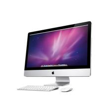

音视频点直播平台
By 三比二小组
@三比二小组
何蔚然
张洵恺
甄显安
陆 喆
黄福林
男
男
女
女
男
Frontend
Foundation 5
AngularJS
VideoJS
BiliBili Barrage
Backend
Flask
(Python 2.7)
MongoDB
Features
Parallax Scrolling
StellarJS
远近视差效果
插件化播放器
VideoJS
视频、音频点播
视频直播
弹幕
第三方无痛移植
疯狂的弹幕
BiliBili Format
全平台支持
IE≥9
of course!
全平台支持

直播服务视乎协议对系统的支持
Large Screen
Large Screen
Medium Screen
Mini Screen
Thank you!
Questions?
仰观宇宙之大，俯察品类之盛，所以游目骋怀，足以极视听之娱，信可乐也。
晋·王羲之《兰亭集序》